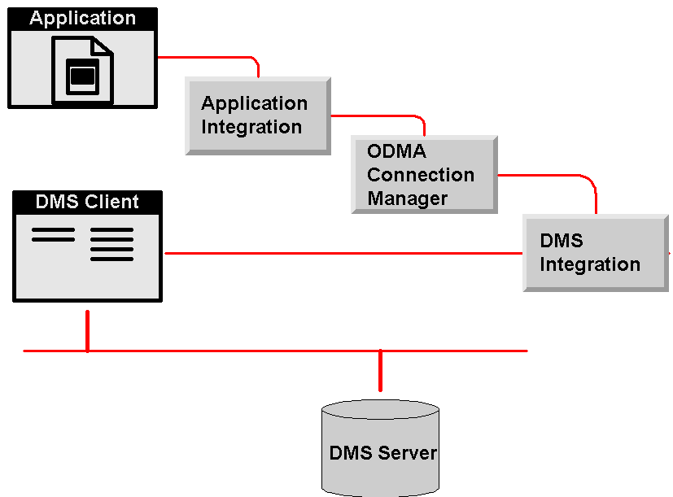

Copyright © 1996-1998 Activedoc
Corporation
Copyright © 2000, AIIM International
For the latest information on ODMA and the ODMA Specifications, consult the ODMA section of the AIIM DMware site at
http://www.dmware.org. The latest status on ODMA 2.0 is always available on the Internet at
http://www.infonuovo.com/odma/support/odma20st.htm.This information is also part of ODMA 2.0 Documentation Files edition 2.0-1. For later editions and current status, consult the ODMA 2.0 Documentation Files description page.
When the application first wants to interact with the
document management environment, it does an ODMRegisterApp call to the
ODMA
Connection Manager (ODMA). It will typically do this as part of its startup, but
it can delay it until the user actually requests interaction with the document
management system (DMS). ODMA returns a handle for the application to use for
identification in all subsequent calls. Before the application exits, it
must call
ODMUnRegisterApp to release the handle and all ODMA and DMS
resources that have been setup to support the application..
As part of ODMRegisterApp
operation, ODMA searches the Windows Registry for
entries in HKEY_Local_Machine/Software/Classes/ODMA.
There is a separate entry for 32-bit as HKEY_Local_Machine/Software/Classes/ODMA32.
These entries identify all ODMA-compliant DMS integrations that are installed on
the same computer as the application. Each entry has a DMS
ID as its key.
ODMA connects to the first DMS whose Windows Registry DMS ID key has a sub-key of
DEFAULT.
The value for the DMS ID key is for a library file provided by the DMS
vendor. This is a .DLL file whose function is to translate the ODMA calls
into calls to the DMS client’s own integration API. If the user has not
already logged in to this DMS either directly or from another application, then
the DMS client puts up a log-in screen.
Once an application has registered with ODMA, it either continues with API calls, or can switch to a COM interface. ODMA then becomes essentially a transparent traffic manager, passing ODMA calls through to the appropriate DMS client. The DMS client implements the COM interface, as an aggregation of that in ODMA.

(Systems do not register with ODMA. They provide an additional API call that the Connection Manager uses to "wake up" the DMS integration, which returns an interface used for further communication.)
Requests for new documents and searches go to the default DMS. If the application provides a document id that is for a different DMS, the Connection Manager starts the DMS client if it is not already connected, and passes the call to it.All dialogs for searching, selecting and setting properties of documents, as well as log-in, come from the DMS client. In ODMA 1.0, neither ODMA nor the application provide any dialogs.
To open a document, the application calls ODMSelectDoc and the DMS
displays a dialog for the user to select the document and version
required. The application calls ODMOpenDoc to ask the DMS to retrieve a
working copy for the application to open.
To save a new document, the application calls ODMNewDoc to get a
temporary document Id, ODMSaveAs for the user to complete a profile,
ODMOpenDoc to get a filename to save to and ODMSaveDoc to let the DMS know
it can take the file. ODMCloseDoc completes the process and tells the DMS
to delete the local work copy of the file.
This document is designed to be used in the same file location as HTML edition 2.0-3 of the ODMA 2.0 Specification and the Errata for that edition. Shortcuts in this document depend on proximity to a copy of the specification. A convenient way to make sure all necessary materials are present is to download the complete ODMA 2.0 Documentation Files package.
derived 2000-09-25-13:55 -0700 (pdt) from an article by Colin
O'Brien
$$Author: Orcmid $
$$Date: 01-04-26 15:59 $
$$Revision: 7 $